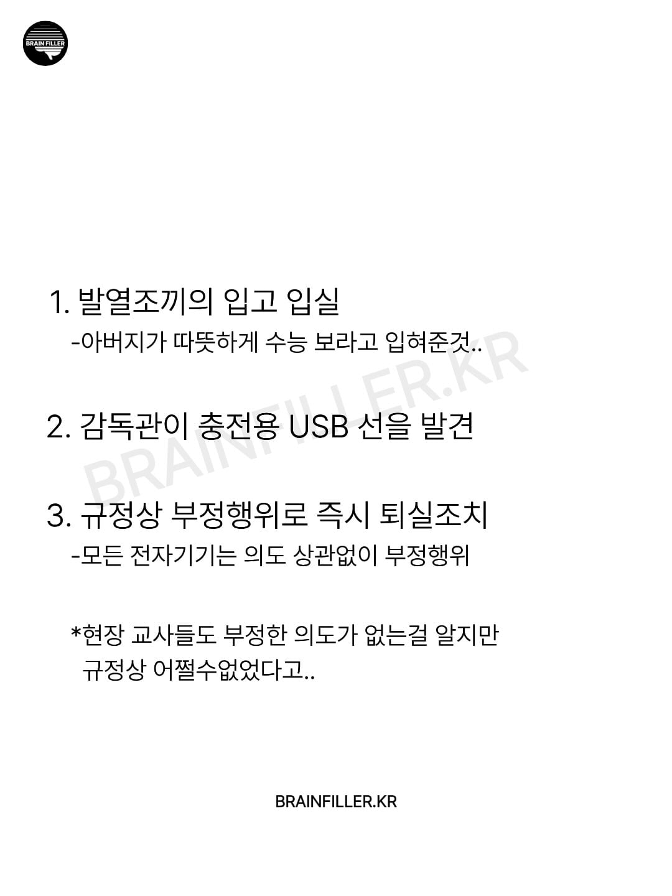

185 · 37 · 8 시간 전 · 원문

수집 당시 댓글 3개
키티호크 · 3 시간 전
ㅜㅜㅠ
년째대학원생 · 3 시간 전
근데 갑자기 든 생각인데 시계도 쿼츠는 금지여야 하지 않냐? ㅋㅋ
안양인삼공사 · 2 시간 전
저 지능이면 어차피 좋은 점수 못 받았을테니 크게 상관 없어보이는데
![🧥 [이번 수능, 발열조끼로 퇴실 당한 수험생]올해 수능 시험장, 추운 시험장에서 조금이라도 따뜻하게 시험을 보라며 아버지가 챙겨준 ’발열조끼‘를 입고 입실한 한 수험생이.jpg](../assets/736055737/3b3c7901e22718a6.jpg)
![🧥 [이번 수능, 발열조끼로 퇴실 당한 수험생]올해 수능 시험장, 추운 시험장에서 조금이라도 따뜻하게 시험을 보라며 아버지가 챙겨준 ’발열조끼‘를 입고 입실한 한 수험생이-1.jpg](../assets/736055737/e0e0a79e3720b8d2.jpg)
ㅜㅜㅠ